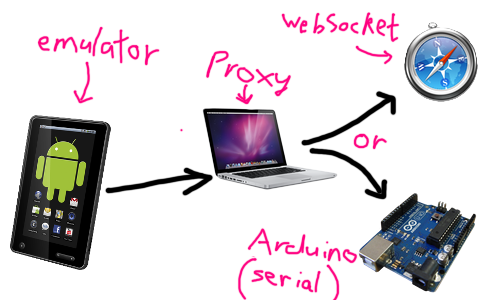

Architecture.
This is the proxy service for sending packets from the emulator to either the WebSocket based simulator, or via Bluetooth Serial to the assistance device. To checkout this project
$ git clone https://github.com/scottyob/accessibility-device-proxy.gitAbout Project
You can find more about the project once you head over to the main project site. I need to create it and move this page into there eventually.